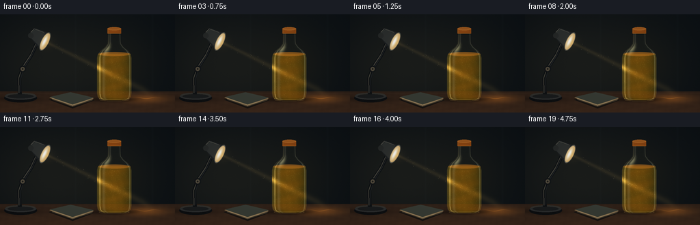
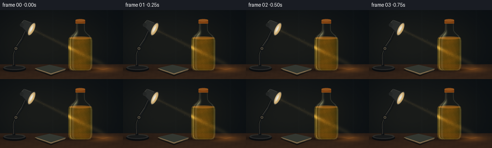
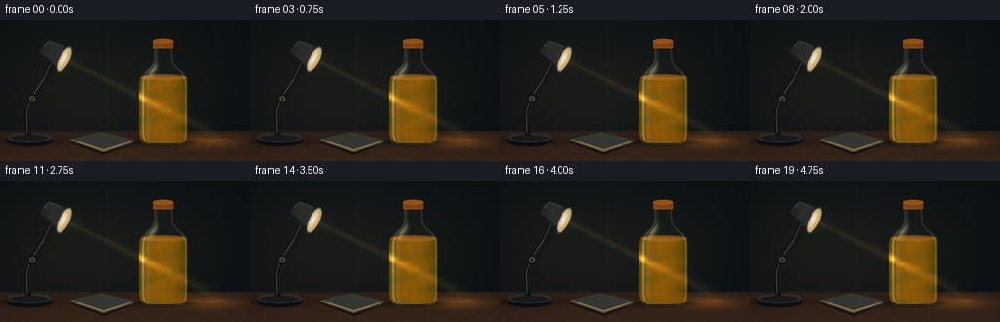
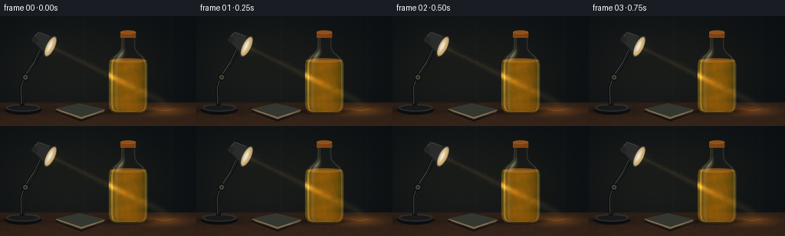
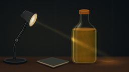

CODING AGENTS AS PIXEL WORLD MODELS
traex/GPT-6.1-Sol · phygen_050
点击播放 · 原生 RGB 像素
逐轮保存的候选
回放视频、检查图与代码变化。
每份候选均可单独播放。实际图片检查记录在下方工具轨迹中。
候选 01播放与检查图
点击播放 · 原生 RGB 像素


展开代码变化
--- 上一保存版本
+++ 本次保存版本
@@ -0,0 +1,251 @@
+from pathlib import Path
+import json
+import numpy as np
+from PIL import Image, ImageDraw, ImageFilter
+import artifact_io
+
+ROOT=Path(__file__).resolve().parent
+SPEC=json.loads((ROOT/'task_spec.json').read_text())
+W,H=SPEC['width'],SPEC['height']
+S=3
+WW,HH=W*S,H*S
+Y,X=np.mgrid[:HH,:WW].astype(np.float32)/S
+rng=np.random.default_rng(5021)
+noise=rng.normal(0,1,(HH,WW)).astype(np.float32)
+
+def mix(img, col, a):
+ a=np.clip(a,0,1)[...,None]
+ return img*(1-a)+np.asarray(col,dtype=np.float32)*a
+
+def layer(): return Image.new('RGBA',(WW,HH))
+def poly(draw, pts, fill): draw.polygon([(int(x*S),int(y*S)) for x,y in pts], fill=fill)
+def ellipse(draw,box,fill,outline=None,width=1): draw.ellipse(tuple(int(v*S) for v in box),fill=fill,outline=outline,width=int(width*S))
+def line(draw,pts,fill,width): draw.line([(int(x*S),int(y*S)) for x,y in pts], fill=fill,width=int(width*S),joint='curve')
+def composite(img, l):
+ a=np.asarray(l).astype(np.float32)
+ return mix(img,a[:,:,:3],a[:,:,3]/255)
+
+# A softly defocused wall, rendered from illumination and broad tonal patches.
+base=np.zeros((HH,WW,3),np.float32)
+base[:]=[12,17,21]
+g=np.exp(-((X-73)/105)**2-((Y-72)/79)**2)
+base+=g[...,None]*np.array([14,11,5])
+base+=np.exp(-((X-181)/57)**2-((Y-72)/55)**2)[...,None]*np.array([6,4,0])
+# Distant vertical wall panels, without sharp distracting details.
+base+= (2*np.exp(-((X-110)/1.2)**2)+2*np.exp(-((X-223)/1.5)**2))[...,None]*np.array([.7,.9,1.0])
+base+=noise[...,None]*.35
+# Walnut desk; diminishing grain and scratches in perspective.
+desk=Y>112.8
+wood=np.zeros_like(base)
+wood[:]=[44,31,23]
+wood+=((Y-113)/31)[...,None]*np.array([13,7,3])
+grain=1.2*np.sin(X*.16+np.sin(Y*.5)*2)+.6*np.sin(X*.64+Y*.13)+.7*noise
+wood+=grain[...,None]*np.array([1,.72,.45])
+wood+=np.exp(-((Y-116)/.6)**2)[...,None]*np.array([4,3,2])
+base=np.where(desk[...,None],wood,base)
+# Orange refracted patch cast beyond the bottle, elliptical due to grazing incidence.
+patch=np.exp(-((X-212)/29)**2-((Y-123.8)/6)**2)*desk
+base+=patch[...,None]*np.array([66,35,7])
+# Table contact shadows.
+shadow=np.exp(-((X-168)/34)**2-((Y-124.7)/3.3)**2)*.66
+base*=1-shadow[...,None]
+shadow=np.exp(-((X-29)/28)**2-((Y-124)/3.5)**2)*.45
+base*=1-shadow[...,None]
+
+# A small closed reading book provides natural desktop context.
+book=layer(); d=ImageDraw.Draw(book)
+poly(d,[(71,125),(104,117),(138,126),(106,138)],(22,19,17,255))
+poly(d,[(72,122),(103,115),(137,123),(106,135)],(121,101,70,255))
+poly(d,[(73,121),(103,114),(137,122),(106,132)],(53,57,50,255))
+line(d,[(76,123),(106,133),(136,124)],(179,157,119,255),.65)
+for off in (0,1,2):
+ line(d,[(76,124+off*.6),(106,134+off*.5),(135,125+off*.5)],(81,70,52,255),.4)
+base=composite(base,book)
+
+# Adjustable reading lamp, dark brushed metal with restrained warm edges.
+lamp=layer();d=ImageDraw.Draw(lamp)
+ellipse(d,(6,116,54,129),(13,15,17,255))
+ellipse(d,(7,115,53,125),(43,44,44,255))
+ellipse(d,(9,115,51,121),(48,47,43,255))
+ellipse(d,(11,117,49,123),(25,27,28,255))
+line(d,[(29,117),(28,93),(34,77),(46,59),(54,42)],(15,18,20,255),6)
+line(d,[(27.7,115),(27.5,93),(32.5,78),(44.5,60),(52.5,43)],(73,71,62,255),1.1)
+line(d,[(30.5,114),(30,94),(35.4,78),(47,59),(54,44)],(31,34,36,255),1.2)
+ellipse(d,(28,75,38,85),(18,21,23,255))
+ellipse(d,(30,77,36,83),(78,72,58,255))
+ellipse(d,(32,79,34,81),(23,24,23,255))
+# Tapered shade, its opening aimed diagonally toward the orange juice.
+poly(d,[(43,32),(50,20),(71,27),(59,52)],(29,32,34,255))
+poly(d,[(43,32),(46,25),(53,21),(66,27),(57,46)],(43,46,45,255))
+line(d,[(45,26),(50,21),(64,26)],(90,88,78,255),.8)
+ellipse(d,(41,27,49,35),(37,40,39,255))
+base=composite(base,lamp)
+# Tilted elliptical reflector opening (axis u, perpendicular v).
+u=np.array([.897,.442]);v=np.array([-.442,.897]);origin=np.array([65.7,39.7])
+DX=X-origin[0]; DY=Y-origin[1]
+p=DX*u[0]+DY*u[1];q=DX*v[0]+DY*v[1]
+opening=(p/5.5)**2+(q/14.4)**2
+rim=np.clip((1.08-opening)*15,0,1)
+base=mix(base,np.array([89,87,77]),rim)
+inner=np.clip((.87-opening)*16,0,1)
+ref=np.zeros_like(base);ref[:]=[195,158,95]
+ref+=np.exp(-((p+1)/3)**2-(q/10)**2)[...,None]*np.array([59,76,113])
+base=mix(base,ref,inner)
+# Light source recessed in the shade.
+bulb=np.exp(-((p+.8)/1.35)**2-(q/5.5)**2)
+base+=bulb[...,None]*np.array([27,39,57])
+
+# A low-density shaft: luminous only where it catches airborne dust.
+beam_axis=39.7+.493*(X-65.7)
+beam_width=2.8+.031*np.maximum(X-65.7,0)
+beam_gate=np.clip((X-67)/4,0,1)*np.clip((226-X)/16,0,1)
+shaft=np.exp(-((Y-beam_axis)/beam_width)**2*1.8)*beam_gate
+base+=shaft[...,None]*np.array([17,13,6])
+# Diffuse glow at the beam origin, not a hard-edged cone.
+base+=np.exp(-((X-69)/10)**2-((Y-42)/9)**2)[...,None]*np.array([12,9,4])
+
+# Bottle geometry: cylindrical body, curved shoulder, slim neck, thick rounded base.
+ykn=np.array([24,29,39,43,48,53,59,64,115,121,124,126],np.float32)
+rkn=np.array([9.2,9.2,9.5,10,13.8,20,24.4,25.4,25.4,24.3,21.7,16],np.float32)
+rad=np.interp(Y,ykn,rkn)
+# Smooth the profile, preserving the cylinder's long straight sides.
+rad_img=Image.fromarray(rad.astype(np.float32),'F').filter(ImageFilter.GaussianBlur(0)) if False else None
+cx=167.
+nx=(X-cx)/rad
+sil=(Y>25)&(Y<126)&(np.abs(nx)<1)
+z=np.sqrt(np.maximum(0,1-nx*nx))
+edge=np.clip((1-np.abs(nx))*S*rad,0,1)*sil
+# Geometry normal for shoulders and base.
+slope=np.interp(Y,ykn,np.gradient(rkn,ykn))
+N_x=nx/np.sqrt(1+slope*slope); N_y=-slope/np.sqrt(1+slope*slope); N_z=z/np.sqrt(1+slope*slope)
+path=2*rad*z
+liquidmask=(Y>=57.5)&sil
+# Persistent fine pulp textures advected at a slow physical rate.
+particles=[]
+for _ in range(470):
+ xx=rng.uniform(143.3,190.7); yy=rng.uniform(59,120)
+ particles.append((xx,yy,rng.uniform(.08,.34),rng.uniform(.4,1),rng.uniform(0,6.28)))
+airdust=[(rng.uniform(76,143),rng.uniform(-5,5),rng.uniform(.1,.27),rng.uniform(.3,.9)) for _ in range(22)]
+
+
+def frame(k):
+ t=k/SPEC['fps']
+ img=base.copy()
+ # Caustics on the tabletop remain attached to the bottle, softly modulated
+ # by suspended particles and refraction, not by movement of the lamp.
+ for j in range(4):
+ c=205+j*5.4
+ yy=122.4+1.1*np.sin((X-c)*.23+j+.16*t)
+ caust=np.exp(-((Y-yy)/(.32+j*.06))**2)*np.exp(-((X-c)/12)**2)*desk
+ img+=caust[...,None]*np.array([15,9,2])
+ # Through the clear neck, the background is compressed/refracted.
+ back=base.copy()
+ aircol=back*.79+np.array([6,7,6])
+ img=mix(img,aircol,edge*(~liquidmask))
+ # Absorption and multiple scattering within the orange suspension.
+ density=.84+.08*np.sin(Y*.31+nx*2)
+ depth=path*density
+ att=np.exp(-depth[...,None]*np.array([.024,.055,.115]))
+ ambient=np.zeros_like(img);ambient[:]=[122,57,9]
+ ambient+=z[...,None]*np.array([38,23,3])
+ ambient+=(.5+.5*N_x)[...,None]*np.array([-23,-9,0])
+ liquid=ambient*(1-att)+back*att
+ # Full 3-D integration of a conical beam along 24 chord samples.
+ # Lamp is a little in front of the bottle, so its scattering channel has depth.
+ scatter=np.zeros((HH,WW),np.float32)
+ filaments=np.zeros_like(scatter)
+ for zf in np.linspace(-.96,.96,24):
+ zz=rad*z*zf
+ beam_y=beam_axis+.035*zz
+ dist=(Y-beam_y)/beam_width
+ axial=np.exp(-1.7*dist*dist)
+ transverse=np.exp(-((zz-4)/14)**2)
+ attenuation=np.exp(-np.maximum(X-142,0)*.042)*np.exp(-(rad*z-zz)*.037)
+ flow=np.sin((X-145)*.26+Y*.42+zz*.27+.34*t+1.4*np.sin(Y*.13-zz*.18-.22*t))
+ detail=np.sin(X*.58-Y*.31+zz*.43+.24*t)
+ pulse=.79+.13*flow+.06*detail
+ sample=axial*transverse*attenuation*pulse
+ scatter+=sample/24
+ filaments+=sample*(np.maximum(flow,.0)**9)/24
+ scatter*=z**.45
+ liquid+=scatter[...,None]*np.array([379,282,101])
+ liquid+=filaments[...,None]*np.array([56,32,3])
+ # Broad internal soft eddies, subtly visible outside the central bright slice.
+ f=np.sin(nx*10+Y*.17+.2*t+1.2*np.sin(Y*.11-.12*t))*np.sin(Y*.34-nx*7+.16*t)
+ liquid+=f[...,None]*np.array([2.8,1.8,.45])*z[...,None]
+ img=mix(img,liquid,edge*liquidmask)
+ # Convex meniscus seen obliquely: highlight at the back, warmer curved front.
+ men=((X-cx)/24.2)**2+((Y-58.1)/3.2)**2
+ menmask=np.clip((1-men)*4,0,1)*sil
+ topcol=np.zeros_like(img);topcol[:]=[150,89,23]
+ topcol+=z[...,None]*np.array([25,17,6])
+ img=mix(img,topcol,menmask*.66)
+ menrim=np.exp(-((men-1)/.09)**2)*sil
+ img+=menrim[...,None]*np.array([22,16,6])
+ # Fine slow-moving suspended pulp. Higher scattering contrast in the light shaft.
+ pulp=layer();d=ImageDraw.Draw(pulp)
+ for px,py,size,strength,phase in particles:
+ yy=py+.47*t+.60*np.sin(.7*t+phase)
+ xx=px+.5*np.sin(t*.37+phase+py*.1)
+ if yy>121: yy-=60
+ rr=np.interp(yy,ykn,rkn)
+ xn=(xx-cx)/rr
+ if abs(xn)>.94: continue
+ illum=np.exp(-((yy-(39.7+.493*(xx-65.7)))/(2.8+.031*(xx-65.7)))**2*1.5)*np.exp(-(xx-143)*.045)
+ a=int((23+155*illum)*strength*(1-xn*xn)**.3)
+ ellipse(d,(xx-size,yy-size*.68,xx+size,yy+size*.68),(255,208,102,a))
+ img=composite(img,pulp)
+ # Glass reflections: Fresnel edges, shoulder normals, long softbox stripes.
+ fres=(1-z)**3
+ img+=edge[...,None]*fres[...,None]*np.array([55,46,28])
+ # Curved warm left reflection of the lamp and cooler thin right room reflection.
+ stripe=np.exp(-((nx+.83)/.046)**2)*(.6+.4*np.exp(-((Y-82)/29)**2))*sil
+ stripe2=np.exp(-((nx-.89)/.024)**2)*sil
+ img+=stripe[...,None]*np.array([72,67,45])
+ img+=stripe2[...,None]*np.array([37,42,39])
+ wide=np.exp(-((nx+.61)/.085)**2)*sil*.15
+ img=mix(img,[199,186,151],wide)
+ lampref=np.exp(-((nx+.55)/.19)**2-((Y-51)/6.5)**2)*sil
+ img+=lampref[...,None]*np.array([75,72,48])
+ # Tiny discontinuities in the reflections lend the glass natural texture.
+ img+=noise[...,None]*sil[...,None]*.3
+ # Clear thick heel below the juice, with two internally reflected arcs.
+ heel=layer();d=ImageDraw.Draw(heel)
+ for yy,alpha in [(123.0,80),(125,65)]:
+ pts=[]
+ for ang in np.linspace(.07,np.pi-.07,70):
+ pts.append((cx+22*np.cos(ang),yy+2.3*np.sin(ang)))
+ line(d,pts,(207,162,88,alpha),.75)
+ line(d,[(146,117),(147,122),(152,124)],(232,200,128,95),.75)
+ img=composite(img,heel)
+ # Screw cap: matte amber, subtly knurled rather than a graphic outline.
+ cap=layer();d=ImageDraw.Draw(cap)
+ ellipse(d,(157,19.2,177,24.8),(132,68,19,255))
+ poly(d,[(157,21.5),(177,21.5),(177,28),(157,28)],(133,66,18,255))
+ for j in range(20):
+ xpos=157.4+j*.98
+ br=int(89+44*np.sqrt(max(0,1-((xpos-164)/14)**2)))
+ line(d,[(xpos,23),(xpos,27.8)],(br,int(br*.53),int(br*.15),255),.4)
+ ellipse(d,(157,18.8,177,23.6),(157,91,33,255))
+ ellipse(d,(159,19.2,175,22.1),(146,82,28,255))
+ line(d,[(158,28),(176,28)],(187,115,40,255),.65)
+ line(d,[(158,22.5),(158,27)],(203,136,61,160),.6)
+ img=composite(img,cap)
+ # Several illuminated motes drift slowly through the air before the bottle.
+ dust=layer();d=ImageDraw.Draw(dust)
+ for xx,off,r,st in airdust:
+ x=xx+.40*t;y=39.7+.493*(x-65.7)+off+.3*np.sin(t+xx)
+ ellipse(d,(x-r,y-r,x+r,y+r),(246,219,159,int(60*st)))
+ img=composite(img,dust)
+ # Film-like highlight shoulder and mild vignette; keep saturated orange detail.
+ img=np.maximum(img,0)
+ img=np.where(img>205,205+50*(1-np.exp(-(img-205)/55)),img)
+ vign=1-.12*((X-135)/163)**2-.1*((Y-76)/110)**2
+ img*=np.clip(vign,.68,1)[...,None]
+ im=Image.fromarray(np.uint8(np.clip(img,0,255)))
+ im=im.resize((W,H),Image.Resampling.LANCZOS)
+ return np.asarray(im.convert('RGB'))
+
+frames=np.stack([frame(i) for i in range(SPEC['frames'])])
+artifact_io.save(frames,ROOT)
+print('Saved',frames.shape,'RGB frames')
候选 02播放与检查图
点击播放 · 原生 RGB 像素


展开代码变化
--- 上一保存版本
+++ 本次保存版本
@@ -146,8 +146,8 @@
density=.84+.08*np.sin(Y*.31+nx*2)
depth=path*density
att=np.exp(-depth[...,None]*np.array([.024,.055,.115]))
- ambient=np.zeros_like(img);ambient[:]=[122,57,9]
- ambient+=z[...,None]*np.array([38,23,3])
+ ambient=np.zeros_like(img);ambient[:]=[174,76,7]
+ ambient+=z[...,None]*np.array([38,24,3])
ambient+=(.5+.5*N_x)[...,None]*np.array([-23,-9,0])
liquid=ambient*(1-att)+back*att
# Full 3-D integration of a conical beam along 24 chord samples.
@@ -161,15 +161,15 @@
axial=np.exp(-1.7*dist*dist)
transverse=np.exp(-((zz-4)/14)**2)
attenuation=np.exp(-np.maximum(X-142,0)*.042)*np.exp(-(rad*z-zz)*.037)
- flow=np.sin((X-145)*.26+Y*.42+zz*.27+.34*t+1.4*np.sin(Y*.13-zz*.18-.22*t))
+ flow=np.sin((X-145)*.26+Y*.42+zz*.27+.65*t+1.4*np.sin(Y*.13-zz*.18-.38*t))
detail=np.sin(X*.58-Y*.31+zz*.43+.24*t)
- pulse=.79+.13*flow+.06*detail
+ pulse=.78+.25*flow+.10*detail
sample=axial*transverse*attenuation*pulse
scatter+=sample/24
filaments+=sample*(np.maximum(flow,.0)**9)/24
scatter*=z**.45
- liquid+=scatter[...,None]*np.array([379,282,101])
- liquid+=filaments[...,None]*np.array([56,32,3])
+ liquid+=scatter[...,None]*np.array([490,326,102])
+ liquid+=filaments[...,None]*np.array([102,55,5])
# Broad internal soft eddies, subtly visible outside the central bright slice.
f=np.sin(nx*10+Y*.17+.2*t+1.2*np.sin(Y*.11-.12*t))*np.sin(Y*.34-nx*7+.16*t)
liquid+=f[...,None]*np.array([2.8,1.8,.45])*z[...,None]
@@ -192,7 +192,7 @@
xn=(xx-cx)/rr
if abs(xn)>.94: continue
illum=np.exp(-((yy-(39.7+.493*(xx-65.7)))/(2.8+.031*(xx-65.7)))**2*1.5)*np.exp(-(xx-143)*.045)
- a=int((23+155*illum)*strength*(1-xn*xn)**.3)
+ a=int((29+195*illum)*strength*(1-xn*xn)**.3)
ellipse(d,(xx-size,yy-size*.68,xx+size,yy+size*.68),(255,208,102,a))
img=composite(img,pulp)
# Glass reflections: Fresnel edges, shoulder normals, long softbox stripes.
可观测工具轨迹
实际执行的命令与返回图片。
命令 1exit 0
/bin/bash -lc 'ls -la && cat prompt.txt && cat GENERATION_RULES.md && cat task_spec.json'
命令 2exit 0
/bin/bash -lc "cat artifact_io.py && python - <<'PY'
import numpy, PIL
print('ready')
PY"命令 3exit 0
/bin/bash -lc "cat > generate.py <<'PY'
from pathlib import Path
import json
import numpy as np
from PIL import Image, ImageDraw, ImageFilter
import artifact_io
ROOT=Path(__file__).resolve().parent
SPEC=json.loads((ROOT/'task_spec.json').read_text())
W,H=SPEC['width'],SPEC['height']
S=3
WW,HH=W*S,H*S
Y,X=np.mgrid[:HH,:WW].astype(np.float32)/S
rng=np.random.default_rng(5021)
noise=rng.normal(0,1,(HH,WW)).astype(np.float32)
def mix(img, col, a):
a=np.clip(a,0,1)[...,None]
return img*(1-a)+np.asarray(col,dtype=np.float32)*a
def layer(): return Image.new('RGBA',(WW,HH))
def poly(draw, pts, fill): draw.polygon([(int(x*S),int(y*S)) for x,y in pts], fill=fill)
def ellipse(draw,box,fill,outline=None,width=1): draw.ellipse(tuple(int(v*S) for v in box),fill=fill,outline=outline,width=int(width*S))
def line(draw,pts,fill,width): draw.line([(int(x*S),int(y*S)) for x,y in pts], fill=fill,width=int(width*S),joint='curve')
def composite(img, l):
a=np.asarray(l).astype(np.float32)
return mix(img,a[:,:,:3],a[:,:,3]/255)
# A softly defocused wall, rendered from illumination and broad tonal patches.
base=np.zeros((HH,WW,3),np.float32)
base[:]=[12,17,21]
g=np.exp(-((X-73)/105)**2-((Y-72)/79)**2)
base+=g[...,None]*np.array([14,11,5])
base+=np.exp(-((X-181)/57)**2-((Y-72)/55)**2)[...,None]*np.array([6,4,0])
# Distant vertical wall panels, without sharp distracting details.
base+= (2*np.exp(-((X-110)/1.2)**2)+2*np.exp(-((X-223)/1.5)**2))[...,None]*np.array([.7,.9,1.0])
base+=noise[...,None]*.35
# Walnut desk; diminishing grain and scratches in perspective.
desk=Y>112.8
wood=np.zeros_like(base)
wood[:]=[44,31,23]
wood+=((Y-113)/31)[...,None]*np.array([13,7,3])
grain=1.2*np.sin(X*.16+np.sin(Y*.5)*2)+.6*np.sin(X*.64+Y*.13)+.7*noise
wood+=grain[...,None]*np.array([1,.72,.45])
wood+=np.exp(-((Y-116)/.6)**2)[...,None]*np.array([4,3,2])
base=np.where(desk[...,None],wood,base)
# Orange refracted patch cast beyond the bottle, elliptical due to grazing incidence.
patch=np.exp(-((X-212)/29)**2-((Y-123.8)/6)**2)*desk
base+=patch[...,None]*np.array([66,35,7])
# Table contact shadows.
shadow=np.exp(-((X-168)/34)**2-((Y-124.7)/3.3)**2)*.66
base*=1-shadow[...,None]
shadow=np.exp(-((X-29)/28)**2-((Y-124)/3.5)**2)*.45
base*=1-shadow[...,None]
# A small closed reading book provides natural desktop context.
book=layer(); d=ImageDraw.Draw(book)
poly(d,[(71,125),(104,117),(138,126),(106,138)],(22,19,17,255))
poly(d,[(72,122),(103,115),(137,123),(106,135)],(121,101,70,255))
poly(d,[(73,121),(103,114),(137,122),(106,132)],(53,57,50,255))
line(d,[(76,123),(106,133),(136,124)],(179,157,119,255),.65)
for off in (0,1,2):
line(d,[(76,124+off*.6),(106,134+off*.5),(135,125+off*.5)],(81,70,52,255),.4)
base=composite(base,book)
# Adjustable reading lamp, dark brushed metal with restrained warm edges.
lamp=layer();d=ImageDraw.Draw(lamp)
ellipse(d,(6,116,54,129),(13,15,17,255))
ellipse(d,(7,115,53,125),(43,44,44,255))
ellipse(d,(9,115,51,121),(48,47,43,255))
ellipse(d,(11,117,49,123),(25,27,28,255))
line(d,[(29,117),(28,93),(34,77),(46,59),(54,42)],(15,18,20,255),6)
line(d,[(27.7,115),(27.5,93),(32.5,78),(44.5,60),(52.5,43)],(73,71,62,255),1.1)
line(d,[(30.5,114),(30,94),(35.4,78),(47,59),(54,44)],(31,34,36,255),1.2)
ellipse(d,(28,75,38,85),(18,21,23,255))
ellipse(d,(30,77,36,83),(78,72,58,255))
ellipse(d,(32,79,34,81),(23,24,23,255))
# Tapered shade, its opening aimed diagonally toward the orange juice.
poly(d,[(43,32),(50,20),(71,27),(59,52)],(29,32,34,255))
poly(d,[(43,32),(46,25),(53,21),(66,27),(57,46)],(43,46,45,255))
line(d,[(45,26),(50,21),(64,26)],(90,88,78,255),.8)
ellipse(d,(41,27,49,35),(37,40,39,255))
base=composite(base,lamp)
# Tilted elliptical reflector opening (axis u, perpendicular v).
u=np.array([.897,.442]);v=np.array([-.442,.897]);origin=np.array([65.7,39.7])
DX=X-origin[0]; DY=Y-origin[1]
p=DX*u[0]+DY*u[1];q=DX*v[0]+DY*v[1]
opening=(p/5.5)**2+(q/14.4)**2
rim=np.clip((1.08-opening)*15,0,1)
base=mix(base,np.array([89,87,77]),rim)
inner=np.clip((.87-opening)*16,0,1)
ref=np.zeros_like(base);ref[:]=[195,158,95]
ref+=np.exp(-((p+1)/3)**2-(q/10)**2)[...,None]*np.array([59,76,113])
base=mix(base,ref,inner)
# Light source recessed in the shade.
bulb=np.exp(-((p+.8)/1.35)**2-(q/5.5)**2)
base+=bulb[...,None]*np.array([27,39,57])
# A low-density shaft: luminous only where it catches airborne dust.
beam_axis=39.7+.493*(X-65.7)
beam_width=2.8+.031*np.maximum(X-65.7,0)
beam_gate=np.clip((X-67)/4,0,1)*np.clip((226-X)/16,0,1)
shaft=np.exp(-((Y-beam_axis)/beam_width)**2*1.8)*beam_gate
base+=shaft[...,None]*np.array([17,13,6])
# Diffuse glow at the beam origin, not a hard-edged cone.
base+=np.exp(-((X-69)/10)**2-((Y-42)/9)**2)[...,None]*np.array([12,9,4])
# Bottle geometry: cylindrical body, curved shoulder, slim neck, thick rounded base.
ykn=np.array([24,29,39,43,48,53,59,64,115,121,124,126],np.float32)
rkn=np.array([9.2,9.2,9.5,10,13.8,20,24.4,25.4,25.4,24.3,21.7,16],np.float32)
rad=np.interp(Y,ykn,rkn)
# Smooth the profile, preserving the cylinder's long straight sides.
rad_img=Image.fromarray(rad.astype(np.float32),'F').filter(ImageFilter.GaussianBlur(0)) if False else None
cx=167.
nx=(X-cx)/rad
sil=(Y>25)&(Y<126)&(np.abs(nx)<1)
z=np.sqrt(np.maximum(0,1-nx*nx))
edge=np.clip((1-np.abs(nx))*S*rad,0,1)*sil
# Geometry normal for shoulders and base.
slope=np.interp(Y,ykn,np.gradient(rkn,ykn))
N_x=nx/np.sqrt(1+slope*slope); N_y=-slope/np.sqrt(1+slope*slope); N_z=z/np.sqrt(1+slope*slope)
path=2*rad*z
liquidmask=(Y>=57.5)&sil
# Persistent fine pulp textures advected at a slow physical rate.
particles=[]
for _ in range(470):
xx=rng.uniform(143.3,190.7); yy=rng.uniform(59,120)
particles.append((xx,yy,rng.uniform(.08,.34),rng.uniform(.4,1),rng.uniform(0,6.28)))
airdust=[(rng.uniform(76,143),rng.uniform(-5,5),rng.uniform(.1,.27),rng.uniform(.3,.9)) for _ in range(22)]
def frame(k):
t=k/SPEC['fps']
img=base.copy()
# Caustics on the tabletop remain attached to the bottle, softly modulated
# by suspended particles and refraction, not by movement of the lamp.
for j in range(4):
c=205+j*5.4
yy=122.4+1.1*np.sin((X-c)*.23+j+.16*t)
caust=np.exp(-((Y-yy)/(.32+j*.06))**2)*np.exp(-((X-c)/12)**2)*desk
img+=caust[...,None]*np.array([15,9,2])
# Through the clear neck, the background is compressed/refracted.
back=base.copy()
aircol=back*.79+np.array([6,7,6])
img=mix(img,aircol,edge*(~liquidmask))
# Absorption and multiple scattering within the orange suspension.
density=.84+.08*np.sin(Y*.31+nx*2)
depth=path*density
att=np.exp(-depth[...,None]*np.array([.024,.055,.115]))
ambient=np.zeros_like(img);ambient[:]=[122,57,9]
ambient+=z[...,None]*np.array([38,23,3])
ambient+=(.5+.5*N_x)[...,None]*np.array([-23,-9,0])
liquid=ambient*(1-att)+back*att
# Full 3-D integration of a conical beam along 24 chord samples.
# Lamp is a little in front of the bottle, so its scattering channel has depth.
scatter=np.zeros((HH,WW),np.float32)
filaments=np.zeros_like(scatter)
for zf in np.linspace(-.96,.96,24):
zz=rad*z*zf
beam_y=beam_axis+.035*zz
dist=(Y-beam_y)/beam_width
axial=np.exp(-1.7*dist*dist)
transverse=np.exp(-((zz-4)/14)**2)
attenuation=np.exp(-np.maximum(X-142,0)*.042)*np.exp(-(rad*z-zz)*.037)
flow=np.sin((X-145)*.26+Y*.42+zz*.27+.34*t+1.4*np.sin(Y*.13-zz*.18-.22*t))
detail=np.sin(X*.58-Y*.31+zz*.43+.24*t)
pulse=.79+.13*flow+.06*detail
sample=axial*transverse*attenuation*pulse
scatter+=sample/24
filaments+=sample*(np.maximum(flow,.0)**9)/24
scatter*=z**.45
liquid+=scatter[...,None]*np.array([379,282,101])
liquid+=filaments[...,None]*np.array([56,32,3])
# Broad internal soft eddies, subtly visible outside the central bright slice.
f=np.sin(nx*10+Y*.17+.2*t+1.2*np.sin(Y*.11-.12*t))*np.sin(Y*.34-nx*7+.16*t)
liquid+=f[...,None]*np.array([2.8,1.8,.45])*z[...,None]
img=mix(img,liquid,edge*liquidmask)
# Convex meniscus seen obliquely: highlight at the back, warmer curved front.
men=((X-cx)/24.2)**2+((Y-58.1)/3.2)**2
menmask=np.clip((1-men)*4,0,1)*sil
topcol=np.zeros_like(img);topcol[:]=[150,89,23]
topcol+=z[...,None]*np.array([25,17,6])
img=mix(img,topcol,menmask*.66)
menrim=np.exp(-((men-1)/.09)**2)*sil
img+=menrim[...,None]*np.array([22,16,6])
# Fine slow-moving suspended pulp. Higher scattering contrast in the light shaft.
pulp=layer();d=ImageDraw.Draw(pulp)
for px,py,size,strength,phase in particles:
yy=py+.47*t+.60*np.sin(.7*t+phase)
xx=px+.5*np.sin(t*.37+phase+py*.1)
if yy>121: yy-=60
rr=np.interp(yy,ykn,rkn)
xn=(xx-cx)/rr
if abs(xn)>.94: continue
illum=np.exp(-((yy-(39.7+.493*(xx-65.7)))/(2.8+.031*(xx-65.7)))**2*1.5)*np.exp(-(xx-143)*.045)
a=int((23+155*illum)*strength*(1-xn*xn)**.3)
ellipse(d,(xx-size,yy-size*.68,xx+size,yy+size*.68),(255,208,102,a))
img=composite(img,pulp)
# Glass reflections: Fresnel edges, shoulder normals, long softbox stripes.
fres=(1-z)**3
img+=edge[...,None]*fres[...,None]*np.array([55,46,28])
# Curved warm left reflection of the lamp and cooler thin right room reflection.
stripe=np.exp(-((nx+.83)/.046)**2)*(.6+.4*np.exp(-((Y-82)/29)**2))*sil
stripe2=np.exp(-((nx-.89)/.024)**2)*sil
img+=stripe[...,None]*np.array([72,67,45])
img+=stripe2[...,None]*np.array([37,42,39])
wide=np.exp(-((nx+.61)/.085)**2)*sil*.15
img=mix(img,[199,186,151],wide)
lampref=np.exp(-((nx+.55)/.19)**2-((Y-51)/6.5)**2)*sil
img+=lampref[...,None]*np.array([75,72,48])
# Tiny discontinuities in the reflections lend the glass natural texture.
img+=noise[...,None]*sil[...,None]*.3
# Clear thick heel below the juice, with two internally reflected arcs.
heel=layer();d=ImageDraw.Draw(heel)
for yy,alpha in [(123.0,80),(125,65)]:
pts=[]
for ang in np.linspace(.07,np.pi-.07,70):
pts.append((cx+22*np.cos(ang),yy+2.3*np.sin(ang)))
line(d,pts,(207,162,88,alpha),.75)
line(d,[(146,117),(147,122),(152,124)],(232,200,128,95),.75)
img=composite(img,heel)
# Screw cap: matte amber, subtly knurled rather than a graphic outline.
cap=layer();d=ImageDraw.Draw(cap)
ellipse(d,(157,19.2,177,24.8),(132,68,19,255))
poly(d,[(157,21.5),(177,21.5),(177,28),(157,28)],(133,66,18,255))
for j in range(20):
xpos=157.4+j*.98
br=int(89+44*np.sqrt(max(0,1-((xpos-164)/14)**2)))
line(d,[(xpos,23),(xpos,27.8)],(br,int(br*.53),int(br*.15),255),.4)
ellipse(d,(157,18.8,177,23.6),(157,91,33,255))
ellipse(d,(159,19.2,175,22.1),(146,82,28,255))
line(d,[(158,28),(176,28)],(187,115,40,255),.65)
line(d,[(158,22.5),(158,27)],(203,136,61,160),.6)
img=composite(img,cap)
# Several illuminated motes drift slowly through the air before the bottle.
dust=layer();d=ImageDraw.Draw(dust)
for xx,off,r,st in airdust:
x=xx+.40*t;y=39.7+.493*(x-65.7)+off+.3*np.sin(t+xx)
ellipse(d,(x-r,y-r,x+r,y+r),(246,219,159,int(60*st)))
img=composite(img,dust)
# Film-like highlight shoulder and mild vignette; keep saturated orange detail.
img=np.maximum(img,0)
img=np.where(img>205,205+50*(1-np.exp(-(img-205)/55)),img)
vign=1-.12*((X-135)/163)**2-.1*((Y-76)/110)**2
img*=np.clip(vign,.68,1)[...,None]
im=Image.fromarray(np.uint8(np.clip(img,0,255)))
im=im.resize((W,H),Image.Resampling.LANCZOS)
return np.asarray(im.convert('RGB'))
frames=np.stack([frame(i) for i in range(SPEC['frames'])])
artifact_io.save(frames,ROOT)
print('Saved',frames.shape,'RGB frames')
PY
python generate.py"命令 4exit 0
/bin/bash -lc "python - <<'PY'
p='generate.py'
s=open(p).read().replace('ambient[:]=[122,57,9]','ambient[:]=[174,76,7]').replace('ambient+=z[...,None]*np.array([38,23,3])','ambient+=z[...,None]*np.array([38,24,3])').replace(\".34*t+1.4*np.sin(Y*.13-zz*.18-.22*t)\",\".65*t+1.4*np.sin(Y*.13-zz*.18-.38*t)\").replace('pulse=.79+.13*flow+.06*detail','pulse=.78+.25*flow+.10*detail').replace('np.array([379,282,101])','np.array([490,326,102])').replace('np.array([56,32,3])','np.array([102,55,5])').replace('a=int((23+155*illum)','a=int((29+195*illum)')
open(p,'w').write(s)
PY
python generate.py"视觉工具实际返回图片 1

视觉工具实际返回图片 2

保存候选 2 份；完成命令 4 次；可验证图片返回 2 张。原始 API 响应与完整日志保留在本地。